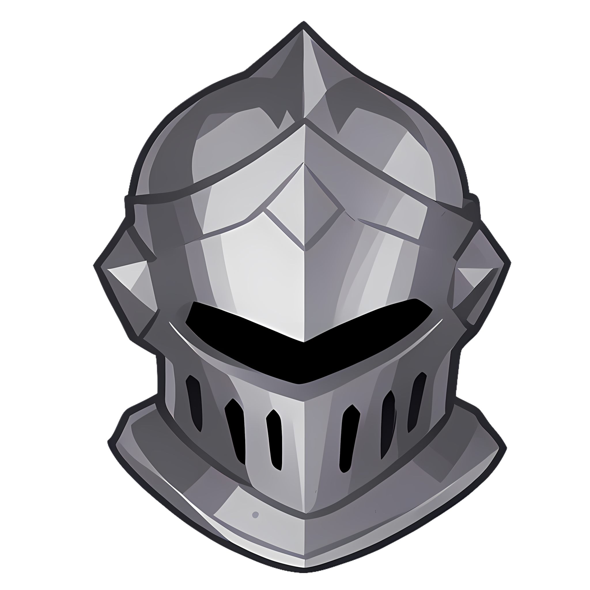
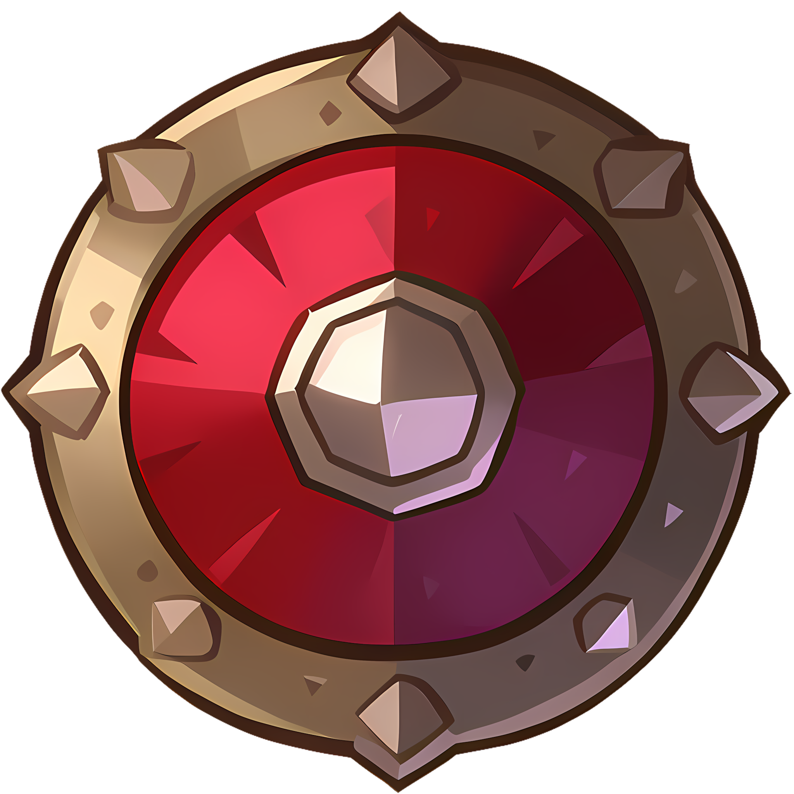
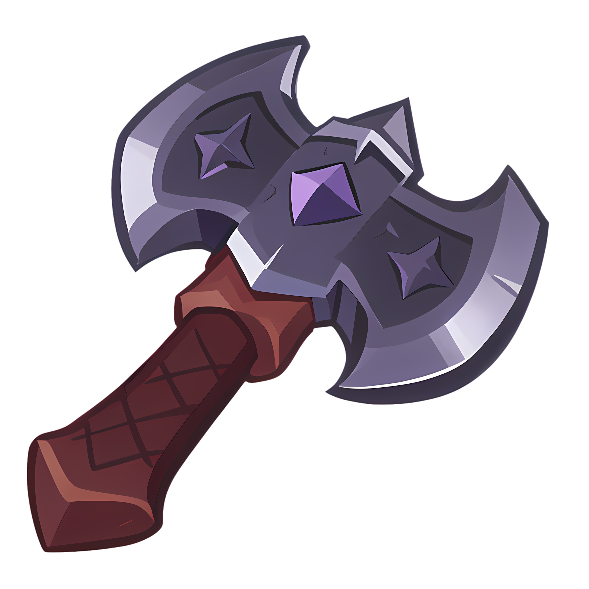

FORJE SEU HERÓI SALVE SUA HISTÓRIA, VIVA SUA LENDA.
Crie fichas completas de Tormenta 20, salve com segurança e gerencie todos os seus personagens em um só lugar.
Crie fichas completas de Tormenta 20, salve com segurança e gerencie todos os seus personagens em um só lugar.

Preencha cada detalhe do seu herói, dos atributos ao inventário, com uma interface feita para Tormenta 20.

Suas fichas salvas com segurança, prontas para serem retomadas a qualquer momento.

Acesse seus personagens de qualquer dispositivo, sempre que uma nova missão começar.